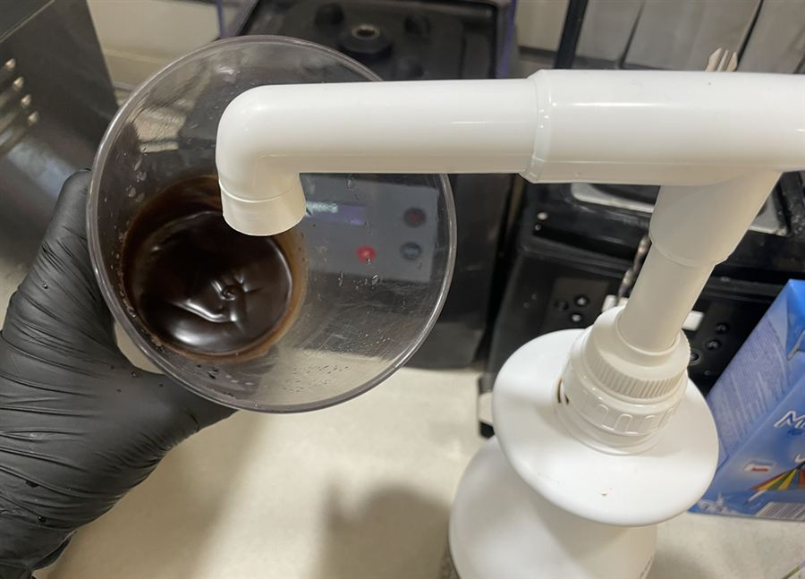
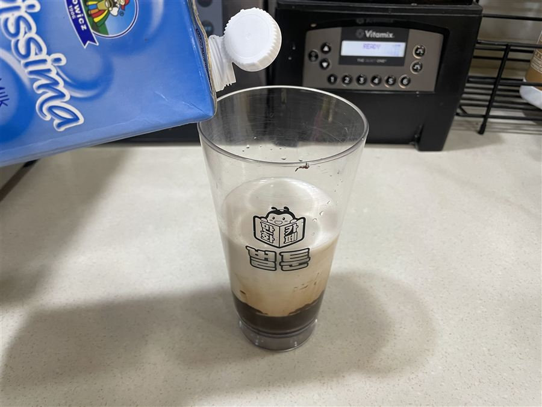
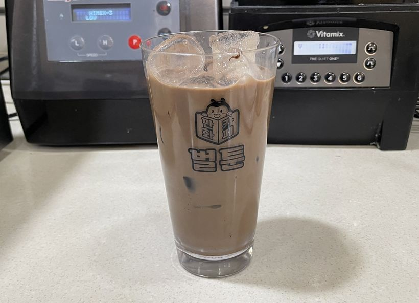
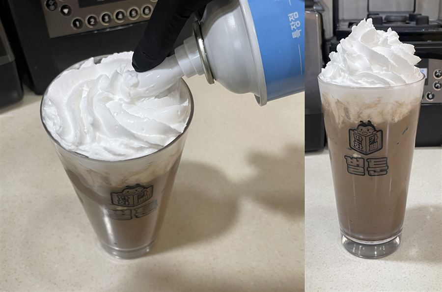
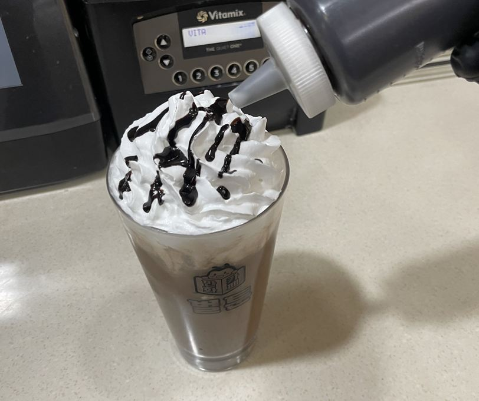
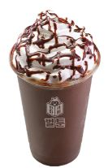

| 메뉴명 | 초콜릿라떼 ICE |
|---|---|
| 판매가격 | 5,000원 |
| 원재료 | 초코소스, 우유, 얼음, 휘핑크림 |
| 사용 부자재 | 16oz 아이스컵, 리드뚜껑, 홀더, 빨대 |
제조방법

1
16온스 컵에 초코소스 2펌프(70g)을 넣는다.
16온스 컵에 초코소스 2펌프(70g)을 넣는다.

2
차가운 우유 200g을 넣어 잘 섞어준다.
차가운 우유 200g을 넣어 잘 섞어준다.

3
얼음을 가득 넣어준다.
얼음을 가득 넣어준다.

4
휘핑크림을 3바퀴(25g) 돌려 풍성하게 올려준다.
(※ 휘핑크림 삭제 요청 시, 제외)
휘핑크림을 3바퀴(25g) 돌려 풍성하게 올려준다.
(※ 휘핑크림 삭제 요청 시, 제외)

5
초코소스 3g을 지그재그로 드리즐 한다.
초코소스 3g을 지그재그로 드리즐 한다.

6
뚜껑을 열고 빨대와 함께 평리드 뚜껑을 별도로 제공한다.
(※ 일회용컵 제공 시, 홀더 끼워 돔리드 뚜껑 제공)
뚜껑을 열고 빨대와 함께 평리드 뚜껑을 별도로 제공한다.
(※ 일회용컵 제공 시, 홀더 끼워 돔리드 뚜껑 제공)